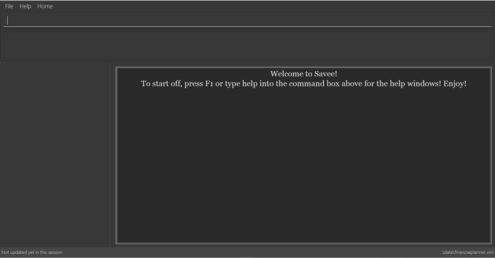

By: T09-4 Since: Aug 2018 Licence: MIT
- 1. Introduction
- 2. Quick Start
- 3. Basic Features
- 3.1. Viewing help :
help - 3.2. Adding a record:
add - 3.3. Listing all records within a date range :
list - 3.4. Locating records by name:
find - 3.5. Locating records by tag:
findtag - 3.6. Selecting a record :
select - 3.7. Sorting displayed records :
sort - 3.8. Editing a record :
edit - 3.9. Deleting a record :
delete - 3.10. Deleting records by date.
delete_date - 3.11. Listing entered commands :
history - 3.12. Undoing previous command :
undo - 3.13. Redoing the previously undone command :
redo - 3.14. Clearing all records :
clear - 3.15. Exiting the program :
exit - 3.16. Saving the data
- 3.1. Viewing help :
- 4. Auto Complete Feature
- 5. Data Analysis Features
- 6. Data management features:
- 7. Spending Limit Features
- 7.1. Adding a limit:
addlimit - 7.2. Viewing all limits:
checkLimit - 7.3. Deleting a limit:
deleteLimit - 7.4. Editing a limit:
editLimit - 7.5. Adding a monthly limit:
addmonthlylimit - 7.6. Editing the monthly limit:
editmonthlylimit - 7.7. Deleting the monthly limit:
deletemonthlylimit - 7.8. Showing a visual representation of daily/monthly summary
[Coming in v2.0] - 7.9. Encrypting data files
[coming in v2.0] - 7.10. Adding description to records
[Coming in v2.0] - 7.11. Changing app configurations
[Coming in v2.0] - 7.12. View bank balances
[Coming in v2.0] - 7.13. Record parties to make payment to
[Coming in v2.0] - 7.14. Adding regular payments/income to be automatically recorded
[Coming in v2.0] - 7.15. Auto Complete for wider range of inputs and accuracy
[Coming in v2.0]
- 7.1. Adding a limit:
- 8. FAQ
- 9. Command Summary
1. Introduction
FinancialPlanner (FP) is for those who prefer to use a desktop app for managing their finances. More importantly, FP is optimized for those who prefer to work with a Command Line Interface (CLI) while still having the benefits of a Graphical User Interface (GUI). If you can type fast, FP can get your finance management tasks done faster than traditional GUI apps. Interested? Jump to the Section 2, “Quick Start” to get started. Enjoy!
2. Quick Start
Before a user is able to use our software, he/she is required to do the following simple steps to set up other software that is required.
-
Ensure you have Java version
9or later installed in your Computer. -
Download the latest
financialplanner.jarhere. -
Copy the file to the folder you want to use as the home folder for your Financial Planner.
-
Double-click the file to start the app. The GUI should appear in a few seconds.
 -
Type the command in the command box and press Enter to execute it.
e.g. typinghelpand pressing Enter will open the help window. -
Some example commands you can try:
-
list: lists all records -
addn/Grocery shopping m/-70 d/20-9-2018 t/Shopping: adds a contact namedGrocery shoppingto the Financial Planner. -
delete3: deletes the 3rd record shown in the current list -
exit: exits the app
-
-
Refer to Section 3, “Basic Features” for details of each command.
3. Basic Features
This section describes the basic features essential to using our Financial Planner.
Command Format
-
Words in
UPPER_CASEare the parameters to be supplied by the user e.g. inadd n/NAME,NAMEis a parameter which can be used asadd n/Grocery shopping. -
Items in square brackets are optional e.g
n/NAME [t/TAG]can be used asn/Grocery shopping t/friendor asn/Grocery shopping. -
Items with
… after them can be used multiple times including zero times e.g.[t/TAG]…can be used ast/friend,t/friend t/familyetc. -
Parameters can be in any order e.g. if the command specifies
n/NAME m/MONEYFLOW,m/MONEYFLOW n/NAMEis also acceptable.
-
NAMEcan be any word, phrase or sentence. -
MONEYFLOWmust be made up of only digits, a single "+" or "-" and at most one decimal point. Also, note that the maximum number of digits the whole number part of this parameter can have is 12 digits. -
DATEis in the form of dd-mm-yyyy where dd represents day, mm represents month and yyyy represents the year. dd and mm both require 1 to 2 digits while yyyy requires exactly 4 digits. -
DATEentered must also be a valid date, no fake dates e.g. 60-11-2018, 30-02-2018. Leap years are also accounted for, meaning that you can enter 29-2-2016 and it will still be accepted. -
TAGis completely optional and can be any alphanumerical word, but limited to only 1 whole word, no whitespaces are allowed. Also, the maximum character length of the tag is 50 characters long. The maximum allowed tags is 2 as these tags will be used to categorise each record, to reduce effort on user’s part in specifying another field. -
INDEXmust be a positive integer1, 2, 3, …
3.1. Viewing help : help
Displays a help page with information on all commands in FinancialPlanner.
Format: help
3.2. Adding a record: add
Adds a record of a financial activity to the FinancialPlanner with the given name, date, money earned or spent and tags.
Format: add n/NAME d/DATE m/MONEYFLOW [t/TAG]…
Name denotes the name of the financial activity, moneyflow denotes the money spent or gained in the financial activity and date denotes the date the financial activity was completed. Each financial activity can be labelled with maximum of 2 of tags as these tags will be used to categorise each record to remove the need for user to specify another field.
|
Moneyflow can be either a debit (expense) or a credit (income). To distinguish between an expense and an income, the user will need to enter a plus "+" or minus "-" sign before the money amount. Only 1 record of the same name, same date and same moneyflow is allowed in the application. Duplicates of the same record is not allowed unless it is of a different date, of a different moneyflow or of a different name. |
Examples:
-
add n/Payment To John d/20-8-2018 m/-10 -
add n/PaymentFromBetty t/friend m/+10 d/10-11-2018 t/classmate
3.3. Listing all records within a date range : list
Shows a list of all records in the financial planner which is within a certain date range.
There are 3 modes, default mode, single argument mode and dual argument mode.
Format:
Default mode: list
Single argument mode: list d/DATE
Dual argument mode: list d/START_DATE END_DATE
Examples:
-
list -
list d/10-11-2018 -
list d/10-11-2018 11-11-2018
3.4. Locating records by name: find
Finds records whose names contain any of the given keywords.
Format: find KEYWORD [MORE_KEYWORDS]
Examples:
-
find Family
Returnsdinner with familyandfamily party -
find family food shopping
Returns all records havingfamily,food, orshoppingin their name
3.5. Locating records by tag: findtag
Finds records with tags that match any of the given keywords.
Format: findtag KEYWORD [MORE_KEYWORDS]
Examples:
-
findtag friend
Returns any record tagged withfriend -
findtag friend food shopping
Returns all records having any of the tagsfriend,food, orshopping
3.6. Selecting a record : select
Selects the record identified by the specified index number in the displayed record list.
Format: select INDEX
Examples:
-
list
select 2
Selects the 2nd record in the expense book. -
find Dinner
select 1
Selects the 1st record in the results of thefindcommand.
3.7. Sorting displayed records : sort
Sorts the list of records in the record book by a category.
There are 3 categories to sort by name, date, moneyflow/money and
records can be sorted in either ascending order asc or descending order desc.
Format: sort [CATEGORY] [ORDER]
Examples:
-
sort date
Sorts the list of records by date in ascending order. -
sort desc
Sorts the list of records by name in descending order. -
sort name asc
Sorts the list of records by name in ascending order. -
sort moneyflow desc
Sorts the list of records by moneyflow in descending order.
3.8. Editing a record : edit
Edits an existing record in the financial planner.
Format: edit INDEX [n/NAME] [m/MONEYFLOW] [d/DATE] [t/TAG]…
Examples:
-
edit 1 m/+33 d/28-2-2018
Edits the moneyflow and date of the 1st record to be+33and28-2-2018respectively. -
edit 2 n/Shopping for clothes t/
Edits the name of the 2nd record to beShopping for clothesand clears all existing tags.
3.9. Deleting a record : delete
Deletes an existing record from the expense book.
Format: delete INDEX
Examples:
-
list
delete 2
Deletes the 2nd record in the expense book. -
find Dinner
delete 1
Deletes the 1st record in the results of thefindcommand.
3.10. Deleting records by date. delete_date
Deletes the records with a specified date from the expense book.
Format: delete_date DATE
Examples:
-
delete_date 31-7-2018
Deletes the records with date 31-7-2018.
3.11. Listing entered commands : history
Lists all the commands that you have entered in reverse chronological order.
Format: history
|
Pressing the ↑ and ↓ arrows will display the previous and next input respectively in the command box. |
3.12. Undoing previous command : undo
Restores the FinancialPlanner to the state before the previous undoable command was executed.
Format: undo
|
Undoable commands: those commands that modify the FinancialPlanner’s stored content (
|
Examples:
-
delete 1
list
undo(reverses thedelete 1command) -
select 1
list
undo
Theundocommand fails as there are no undoable commands executed previously.
3.13. Redoing the previously undone command : redo
Reverses the most recent undo command.
Format: redo
Examples:
-
delete 1
undo(reverses thedelete 1command)
redo(reapplies thedelete 1command) -
delete 1
redo
Theredocommand fails as there are noundocommands executed previously. -
delete 1
clear
undo(reverses theclearcommand)
undo(reverses thedelete 1command)
redo(reapplies thedelete 1command)
redo(reapplies theclearcommand)
3.14. Clearing all records : clear
Clears all records from the FinancialPlanner.
Format: clear
3.15. Exiting the program : exit
Exits the program.
Format: exit
3.16. Saving the data
All Financial Planner data is saved in the hard disk automatically after any command that changes the data.
There is no need to save manually.
4. Auto Complete Feature
This section describes the auto completing feature implemented in the command box. A list of possible words will be displayed in a popup-box under the command box according to the user input.
-
Word suggestions are not case sensitive. e.g.
HELwill have a possible suggestionHELP -
Possible words that contain the user input can also be suggested. e.g.
tagwill have a possbile suggestionfindtag -
Whitespaces are ignored in the input regardless of where they appear.
-
Auto completion is performed word by word.

4.1. Auto Complete for Commands
Command words that contain the word input by the user will appear as possible suggestions. Refer to Section 3, “Basic Features” and Section 5, “Data Analysis Features” for all possible commands.
-
Command words are always the first word in the input and are only suggested for the first word input.
4.2. Auto Complete for Tags
When the command word findtag has been entered, suggestions will display based on
tags that currently exist in the FinancialPlanner data as tags of other existing records.
Refer to Section 3.5, “Locating records by tag: findtag” for
more information on how the findtag works.
-
Any number of tags can be input and every word typed after the command word can bring up the suggestion popup for tags.
4.3. Auto Complete for Sort
When the command word sort is entered, suggestion will display based on the possible keyword inputs for the sort function.
Refer to Section 3.7, “Sorting displayed records : sort” for the sort function keywords.
-
When a
CATEGORYhas already been entered, the only possible suggestions areascanddescas they are the only `SORT_ORDER possible. -
Likewise, when a
SORT_ORDERhas already been entered, onlyCATEGORYsuch asname,dateormoneywill be suggested. -
After two words have been keyed in, no other suggestions will be made as
sortonly takes 2 parameters.
5. Data Analysis Features
This section describe features for the user to analyse his/her financial status in greater detail.
5.1. Showing a summary table of all financial activity in a time period: summary
Shows a summary table listing by day, month or categories within a given time specified by the user.
A summary is an item that contains information on the date or month that is represented, the total expense calculated, the total income calculated and
the net money flow calculated. A category refers to any set of tags that are assigned to any records in the application.
The summary command supports both listing by date, by month and by categories.
Format:
-
By Date:
summary date d/START_DATE END_DATE -
By Month:
summary month d/START_MONTH END_MONTH -
By Category:
summary category d/START_DATE END_DATE
Examples:
-
summary date d/1-1-2018 12-12-2018 -
summary month d/apr-2018 sep-2018 -
summary month d/APR-2018 SeP-2018 -
summary category d/1-1-2018 12-12-2018
The screenshots below are examples of what you can see once the command has been accepted. The commands entered have been left in for visualisation purposes.

Screenshot of app when summary date d/1-1-2018 12-12-2018 is run

Screenshot of app when summary month d/jan-2018 dec-2018 is run

Screenshot of app when summary category d/1-1-2018 12-12-2018 is run
5.2. Showing a breakdown of total expenses and income into categories: stats
Shows a breakdown of total expenses and income into categories and displays these information in a pie chart.
Format:`stats d/START_DATE END_DATE`
Once the command has been executed, 2 tabs will appear showing a pie chart containing data that is relevant in the range.
| Due to label constraints, some labels may not be displaying correctly if they are overlapping with other labels. This happens when the pie slice is too small. To improve readability, we have decided to hide some labels in such scenarios. Also, when the label is too long, since the pie charts need to fit the labels, the pie chart may become small as a result. To prevent such situations, please keep your labels short. This will be improved in later versions of the product to remove the labels completely and use a mouse over input instead. |
Examples:
-
stats d/1-1-2018 12-12-2018
Below are some screenshots of what you can see when the command has been accepted. The commands entered have been left in for visualisation purposes.

Screenshot of app displaying expense breakdown when stats d/1-1-2018 12-12-2018 is run

Screenshot of app displaying income breakdown when stats d/1-1-2018 12-12-2018 is run
5.3. Showing a breakdown of total expenses and income into categories of this month: NO COMMAND REQUIRED
Shows a breakdown of total expenses and income into categories using data of this month.
No format is required for this feature as the feature is automatically triggered when there is any changes to the list of records within the application.
This feature automatically tracks the current date and ensures that the data presented is updated regardless regardless of whether the application is off or on for
prolonged periods of time.
Even in the event where the user is using the application at close to 12 midnight of the last day of a particular month and the clocks strikes 12, the application will update the data whenever it detects any record data modifications in the app to reflect the next month.
|
The data used to represent the pie charts in the welcome panel is only updated whenever there are any changes to records within the FinancialPlanner. This includes adding records, deleting records and editing records in the FinancialPlanner. |
Below shows a snapshot of what the user can see when there are records available of the current month

Screenshot of app on startup when records of current month are available
6. Data management features:
This section describe features for the user to manage his/her records data in the Financial Planner, with the help of Excel.
6.1. Export the records into the Excel file. export_excel
Exports the records into an Excel file.
There are 6 modes, default mode, single argument mode and dual argument mode (for Date) and single argument mode (Directory Path).
Format:
-
Default mode:
export_excel -
Single argument Date mode:
export_excel d/DATE -
Dual argument Date mode:
export_excel d/START_DATE END_DATE -
Single argument Directory Path mode:
export_excel dir/DIRECTORY_PATH -
Single argument Directory Path + Single argument Date mode:
export_excel d/DATE dir/DIRECTORY_PATH -
Single argument Directory Path + Dual argument Date mode:
export_excel d/START_DATE END_DATE dir/DIRECTORY_PATH
Examples:
-
export_excel -
export_excel d/31-3-1999 -
export_excel d/31-3-1999 31-03-2019 -
export_excel d/31-3-1999 dir/C:\ -
export_excel d/31-3-1999 31-3-2019 dir/C:\
The Excel file name will be named based on the command, relating to Date:
-
Default mode: The Excel file will be named
Financial_Planner_ALL.xlsx -
Single argument Date mode: The Excel file will be named
Financial_Planner_dd-mm-yyyy.xlsx -
Dual argument Date: The Excel file will be named
Financial_Planner_dd-mm-yyyy_dd-mm-yyyy.xlsxThere will be two sheets in the Excel file, namely
RECORD DATAandSUMMARY DATA. -
RECORD DATAstores all the data of record the user want to export, there are 4 columns: Name, date, money and tags, the tags names will be separated by …, for visual benefit.

-
SUMMARY DATAstored the summary statistics for the period you exported, and there is a Line Chart next to the table for visual statistic [refer toDraw line chartpart for more information].-
As you can see in the picture, there are 3 series shown:
-
The first blue line named Income represents the relation between Timeline (each component is one Date) and the Income (each component is one income).
-
The second orange line named Outcome represents the relation between Timeline (each component is one Date) and the Outcome (each component is one outcome).
-
The third grey line named Net represents the relation Timeline (each component is one Date) and the Net - Sum of income and outcome (each component is one net).
-
-

As the size of the Chart is fixed initially. Sometimes, when user exports too many dates, the distance between each date on the chart might be tight. It is suggesting that the user justify the size of the chart by himself/herself.
6.2. Import the records stored from the Excel file. import
There are 2 modes, single argument File Path mode and (single argument Directory Path + single argument File Name) mode
Format:
-
Single argument File Path mode:
import dir/FILE_PATH -
Single argument File Path + single argument File name mode:
import dir/DIRECTORY_PATH n/NAME_FILE
Examples:
-
import dir/C:\Financial_Planner_ALL.xlsx -
import dir/C:\ n/Financial_Planner_All.xlsx
Please note that User have to add the post-fix .xlsx at the end to indicate this is a Excel file.
When performing import command to import all the records data from the Excel file to the Financial Planner, user should take note that there are some constraints which may help the import command performs smoothly.
-
The excel file can have multiple sheets, containing records data. The starting row of the table does not have to be first row of the sheet. This also applies to the column.
-
There can be blank row blending in the table, but there must be no blank column.
-
The First row of the table should have 4 cells, namely NAME, DATE, MONEY, TAGS. These 4 columns can be case-insensitive. The sheet with records data but does not have the first row, NAME, DATE, MONEY, TAGS will not be read.
-
The information of NAME, DATE, MONEY columns should be fully filled, while the TAGS columns is optionally filled.
-
Each tag should be separated by … (3 consecutive dots). Beside … , numbers and alphabet character, there should be no other character.
The picture below shows a good example for the Excel Sheet.
6.3. Archive the records into the Excel file. archive
Archives the records into an Excel file.
There are 5 modes, default mode, single argument mode and dual argument mode (for Date) and single argument mode (Directory Path).
Format:
-
Default mode:
archive -
Single argument Date mode:
archive d/DATE -
Dual argument Date mode:
archive d/START_DATE END_DATE -
Single argument Directory Path mode:
archive dir/DIRECTORY_PATH -
Single argument Directory Path + Single argument Date mode:
archive d/DATE dir/DIRECTORY_PATH -
Single argument Directory Path + Dual argument Date mode:
archive d/START_DATE END_DATE dir/DIRECTORY_PATH
The Excel file name will be named based on the command, relating to Date:
-
Default mode: The Excel file will be named
Financial_Planner_ALL.xlsx -
Single argument Date mode: The Excel file will be named
Financial_Planner_dd-mm-yyyy.xlsx -
Dual argument Date: The Excel file will be named
Financial_Planner_dd-mm-yyyy_dd-mm-yyyy.xlsxExamples:
-
archive -
archive d/31-3-1999 -
archive d/31-3-1999 31-03-2019 -
archive d/31-3-1999 dir/C:\ -
archive d/31-3-1999 31-3-2019 dir/C:\
There will be two sheets in the Excel file, namely RECORD DATA and SUMMARY DATA.
-
RECORD DATAstores all the data of record the user want to archive, there are 4 columns: Name, date, money and tags, the tags names will be separated by …, for visual benefit.
-
SUMMARY DATAstored the summary statistics for the period you archived, and there is a Line Chart next to the table for visual statistic [refer toDraw line chartpart for more information].-
As you can see in the picture, there are 3 series shown:
-
The first blue line named Income represents the relation between Timeline (each component is one Date) and the Income (each component is one income).
-
The second orange line named Outcome represents the relation between Timeline (each component is one Date) and the Outcome (each component is one outcome).
-
The third grey line named Net represents the relation Timeline (each component is one Date) and the Net - Sum of income and outcome (each component is one net).
-
-
As the size of the Chart is fixed initially. Sometimes, when user archive too many dates, the distance between each date on the chart might be tight. It is suggesting that the user justify the size of the chart by himself/herself.
6.4. Draw a line chart automatically inside the Excel sheet
Automatically uses the the summary data from the SUMMARY DATA sheet in the Excel sheet after the command archive or export_excel is called.
This feature does not require user typing the command. It is automatically done if the user type in command archive or export_excel.
As you can see the screenshot below, in the SUMMARY DATA sheet, next to the summary table:
-
The size of the line chart (based on default column width and default row height) is:
-
The width is 15 columns
-
The height is 30 rows.
-
-
On the top left of the chart, the legend shows 3 lines, namely Income, Outcome, and Net.
-
The first blue line shows the Income based on Date.
-
The second orange line shows the Outcome based on Date
-
The third grey line shows the Net (total of income and outcome) based on Date.
-
7. Spending Limit Features
-
This section describes the limit feature that allows users to set values to control their future spending. Constraints that apply to records also apply to each limit. Refer to [constraints] for more information.
7.1. Adding a limit: addlimit
Adds a spending limit for a time period or a particular day to the FinancialPlanner.
Format: addlimit d/START_DATE END_DATE m/MONEYFLOW (limit d/DATE m/MONEYFLOW)+
When inputting two days, START_DATE and END_DATE indicates the starting date and ending date for the limit. If there is only one date, that day will be the time period. MONEYFLOW denotes the money spending limit for that period of time.
-
After the limits have been added, Financial Planner will keep checking the latest condition of these limits. Once the total amount of money spent during this time period exceeds the spending limit, FinancialPlanner will warn the user by sending the warning message.
Example:
-
addlimit d/20-8-2018 m/100 -
addlimit d/20-8-2018 30-8-2018 m/632 -
addlimit d/20-8-2018 30-8-2018 m/100
7.2. Viewing all limits: checkLimit
Displays all limits information stored in FinancialPlanner
Format: checklimit
Example:
* checklimit
7.3. Deleting a limit: deleteLimit
Deletes an existing spending limit from the FinancialPlanner
Format: deleteLimit d/START_DATE END_DATE (deleteLimit d/START_DATE)
The deleting command is based on the date period, since there will be at most one limit for one period of time, user only need to enter a period of time or a single date. The limit with the same dates will be deleted. If there is no limit for that period, the program will throw errors. Delete
Examples:
-
deletelimit d/20-8-2018 -
deletelimit d/20-8-2018 30-8-2018
7.4. Editing a limit: editLimit
Edit a limit to the FinancialPlanner
Format: editLimit d/START_DATE END_DATE m/MONEYFLOW (editLimit d/START_DATE END_DATE m/MONEYFLOW)+
Editlimit is similar to Section 7.3, “Deleting a limit: deleteLimit” command, it is also based on the date period.
The editlimit command will check the input date period or the single day and
replace the original moneyFlow with the new moneyFlow.
Examples:
-
editlimit d/20-8-2018 m/200 -
editlimit d/20-8-2018 30-8-2018 m/200
7.5. Adding a monthly limit: addmonthlylimit
Add a continuous monthly limit always for the current month.
Format: addmonthlylimit m/MONEYFLOW
The monthly limit will always check the spend of the current month according to the current time. For example, if the limit was set to be 200 at April, the limit will check the total spend for April. When the time comes to May, the limit will no longer check April, instead, the limit will check the total spend of May until the last second of May.
Examples:
* addmonthlylimit m/200
7.6. Editing the monthly limit: editmonthlylimit
Edit an existing monthly limit.
Format: editmonthlylimit m/MONEYFLOW
The monthly limit will be replaced by the new monthly limit.
Examples:
* editmonthlylimit m/200
7.7. Deleting the monthly limit: deletemonthlylimit
Delete the monthly limit.
Format: deletemonthlylimit
The monthly limit will be deleted and no longer check the spend of the current month.
Examples:
* deletemonthlylimit
== Upcoming Features
8. FAQ
Q: How do I transfer my data to another Computer?
A: Install the app in the other computer and overwrite the empty data file it creates with the file that contains the data of your previous Financial Planner folder.
9. Command Summary
-
Help :
help -
Add :
add n/NAME d/DATE m/MONEYFLOW [t/TAG]…
e.g.add n/Dinner with family d/20-12-2017 m/-10 t/food t/family -
List :
list [d/DATE] [DATE]
e.g.-
list -
list d/20-12-2017 -
list d/20-12-2017 30-09-2018
-
-
Find :
find KEYWORD [MORE_KEYWORDS]
e.g.find James Jake -
Find tag :
findtag KEYWORD [MORE_KEYWORDS]
e.g.findtag friend -
Select :
select INDEX
e.g.select 2 -
Sort :
sort [CATEGORY] [ORDER]
e.g.sort name asc -
Edit :
edit INDEX [n/NAME] [d/DATE] [m/MONEYFLOW] [t/TAG]…
e.g.edit 2 n/Present d/12-11-2018 -
Delete :
delete INDEX
e.g.delete 3 -
Delete by date :
deletedate DATE
e.g.delete 31-7-2018 -
History :
history -
Undo :
undo -
Redo :
redo -
Clear :
clear -
Exit :
exit -
View summary : multiple modes of
summary
e.g.-
summary date d/1-1-2018 12-12-2018 -
summary month d/apr-2018 sep-2018 -
summary month d/APR-2018 SeP-2018 -
summary category d/1-1-2018 12-12-2018
-
-
View pie chart breakdown :
stats d/DATE DATE
e.g.stats d/20-12-2017 31-09-2018 -
Export into Excel : multiple modes of
exportexcel
e.g.-
exportexcel -
exportexcel d/31-3-1999 -
exportexcel d/31-3-1999 31-03-2019 -
exportexcel d/31-3-1999 dir/C:\ -
exportexcel d/31-3-1999 31-3-2019 dir/C:\
-
-
Import into app : multiple modes of
import
e.g.-
import dir/C:\Financial_Planner_ALL.xlsx -
import dir/C:\ n/Financial_Planner_All.xlsx
-
-
Archive records : multiple modes of
archive
e.g.-
archive -
archive d/31-3-1999 -
archive d/31-3-1999 31-03-2019 -
archive d/31-3-1999 dir/C:\ -
archive d/31-3-1999 31-3-2019 dir/C:\
-
-
Add limit :
addlimit d/DATE [DATE] m/MONEYFLOW
e.g.-
addlimit d/20-12-2017 -
addlimit d/20-12-2017 30-09-2018
-
-
Check limit :
checklimit d/DATE [DATE] -
Delete limit
deletelimit d/DATE [DATE]
e.g.-
deleteLimit d/20-12-2017 -
deleteLimit d/20-12-2017 31-09-2018
-
-
Edit limit
editlimit d/DATE [DATE] m/MONEYFLOW
e.g.-
editlimit d/20-12-2017 m/100 -
editlimit d/20-12-2017 31-09-2018 m/100
-
-
Check limit :
checklimite.g.-
checklimit d/20-12-2017 -
checklimit d/20-12-2018 31-09-2018
-
-
Add monthly limit :
addmonthlylimit m/MONEYFLOW
e.g.
addmonthlylimit m/500 -
Edit monthly limit :
editmonthlylimit m/MONEYFLOW
e.g.
editmonthlylimit m/300 -
Delete monthly limit :
deletemonthlylimit